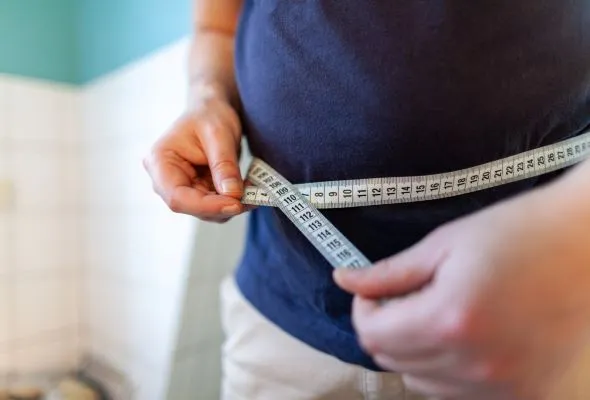
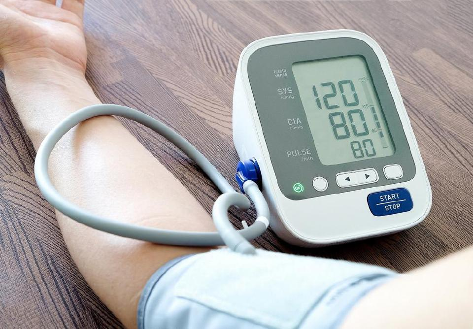
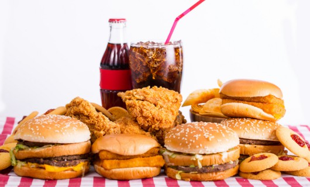
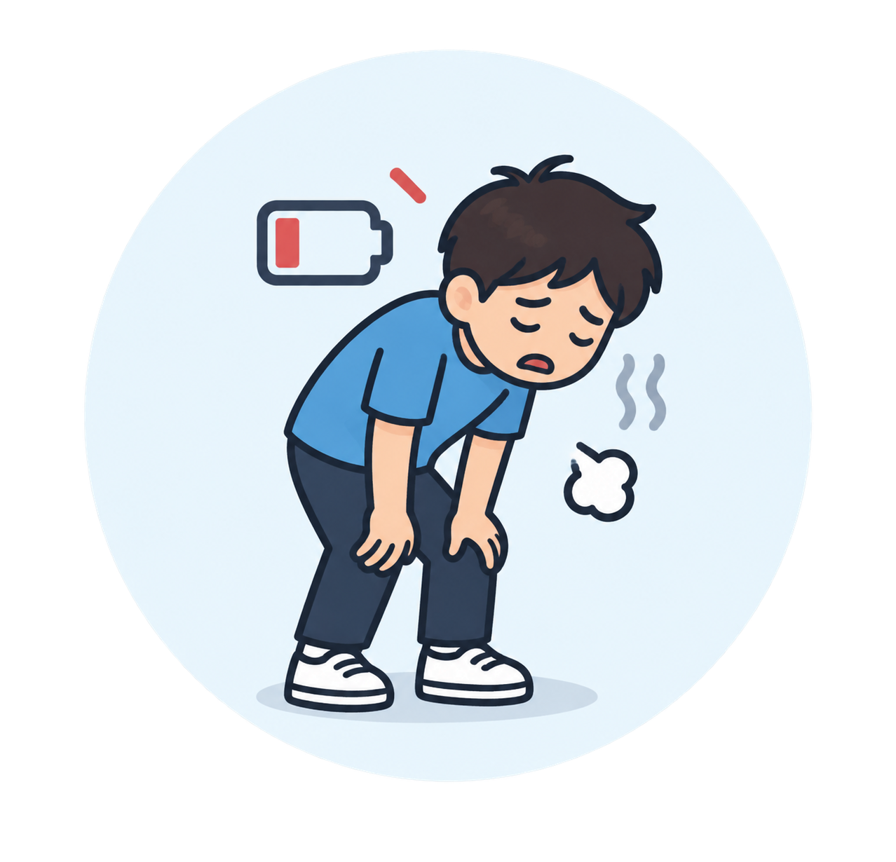

Berat badan berlebihan
Pengambilan makanan segera yang tinggi kalori boleh menyebabkan pertambahan berat badan.
Pengambilan makanan segera secara berlebihan boleh memberi kesan negatif terhadap kesihatan pelajar dalam jangka masa panjang.

Pengambilan makanan segera yang tinggi kalori boleh menyebabkan pertambahan berat badan.

Meningkatkan risiko paras gula dalam darah yang tidak normal.
Pengambilan lemak tepu yang tinggi boleh meningkatkan risiko penyakit jantung.

Kandungan garam yang tinggi boleh menyebabkan tekanan darah meningkat.
Makanan segera kurang nutrisi boleh menyebabkan mudah letih dan kurang tenaga.

Makanan segera tidak mengandungi nutrien penting seperti vitamin, mineral dan serat.
Sukar mencapai keputusan yang cemerlang.

Mengganggu aktiviti harian dan pembelajaran.
Mengurangkan daya fokus semasa belajar.
Boleh membawa kepada masalah kesihatan jangka panjang.